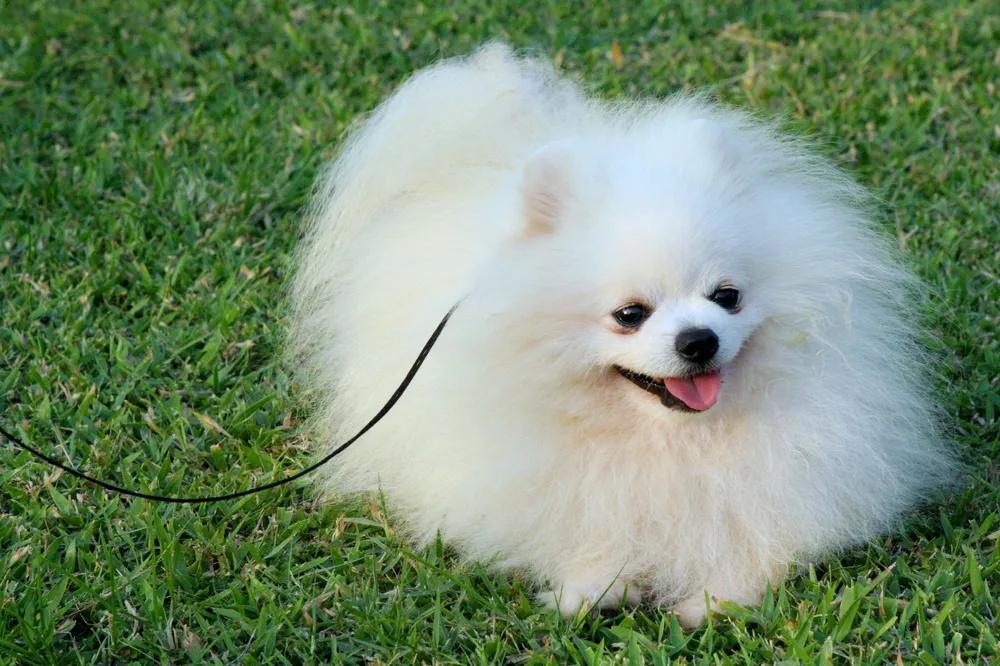

Pomeranian
The Pomeranian is a small, fluffy breed of dog known for its lively personality and beautiful double coat. Despite their tiny size, Pomeranians are confident, alert, and often described as having a “big dog attitude.” They are one of the most popular companion dogs in the world due to their intelligence, charm, and loyalty.
1 / 3

2 / 3

3 / 3
Appearance
| Height | 6–7 inches |
|---|---|
| Weight | 3–7 pounds |
| Coat | Double coat; dense undercoat |
| Colors | White, cream, black, brown, reddish brown |
FAQ
Pomerania (modern Germany/Poland), descended from Spitz-type sled dogs.
- Luxating patella
- Tracheal collapse
- Dental disease